High-Quality Camera Pictures
Self-made, professional-grade photography of nature, wildlife and gardens — sharp, vivid and print-ready.

Self-made high-quality camera pictures of home-grown flowers, fruits, greens and wildlife. Your personal window to nature in the Netherlands.
Get in TouchFrom the garden to your screen — quality and passion in every frame.
Self-made, professional-grade photography of nature, wildlife and gardens — sharp, vivid and print-ready.
From seed to bloom — pictures of flowers grown at home, celebrating colour and life in Tilburg.
Fresh harvests from the garden — fruits and greens documented with care and a love for detail.
Birds, insects and small wildlife in Tilburg — intimate, respectful portraits of local nature.

Based in Tilburg Noord, Marl combines a passion for gardening with a keen eye for wildlife and detail. What started as a personal love for home-grown flowers and local nature has grown into a blog that shares high-quality, self-made camera pictures with others who appreciate the same.
From butterflies on zinnias to birds at the feeder and dragonflies by the pond, every image is captured with care and respect for the subject. Whether it's the first bloom of the season or a rare moment with a visiting bird, Pics By Marl is your window to garden life and wildlife in Tilburg and the Netherlands.
A selection of wildlife and garden photography from Tilburg.
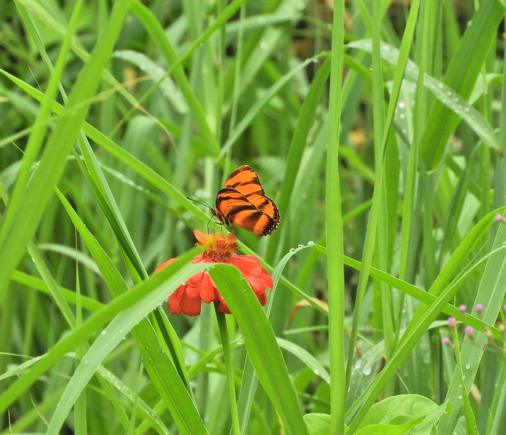
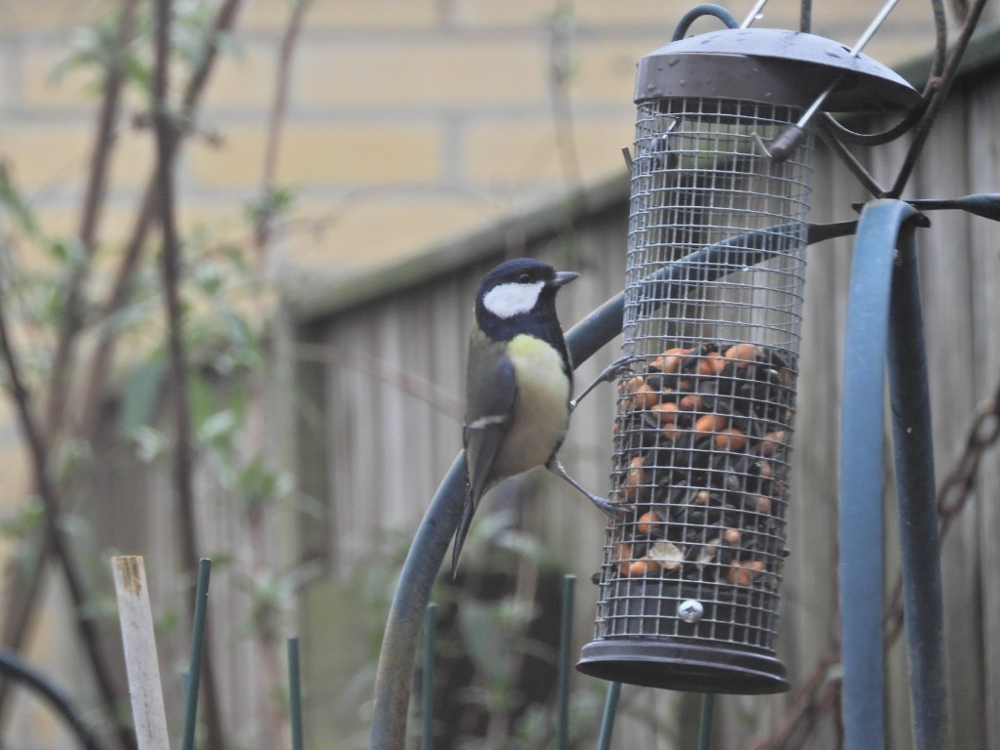
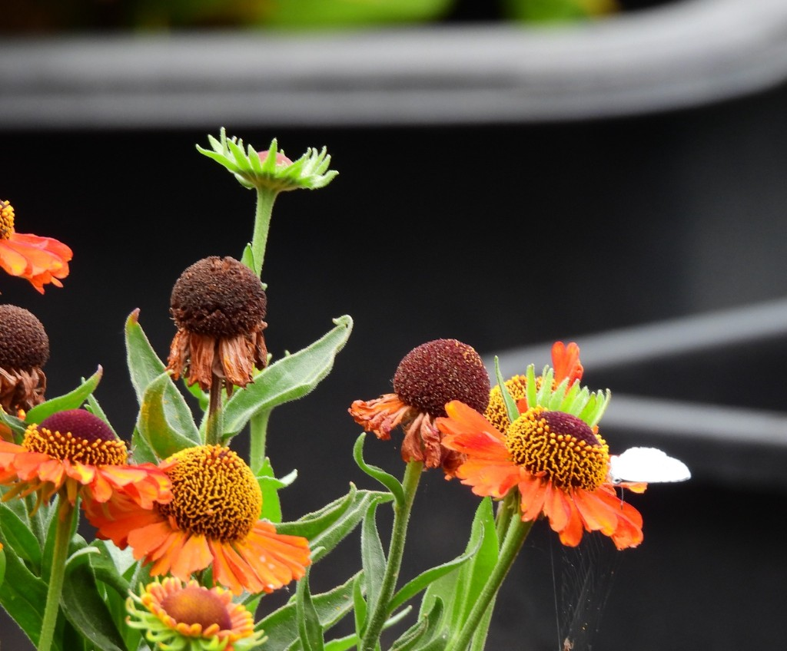
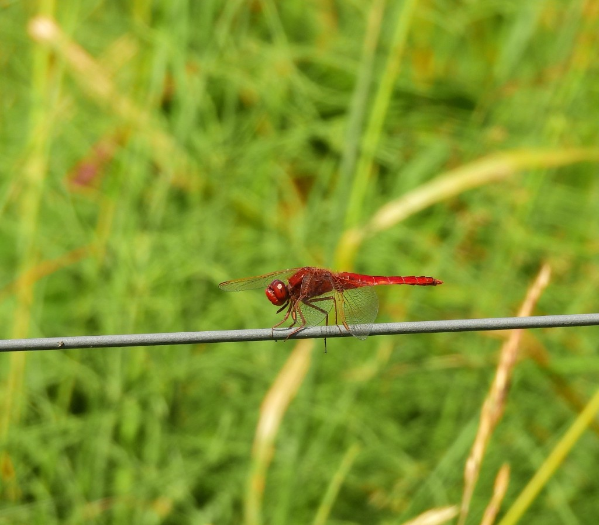
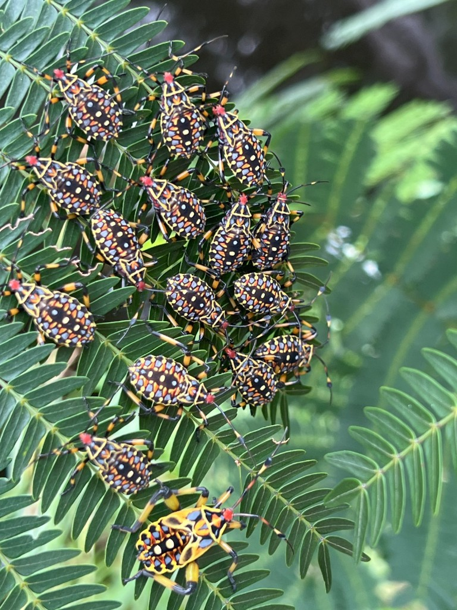
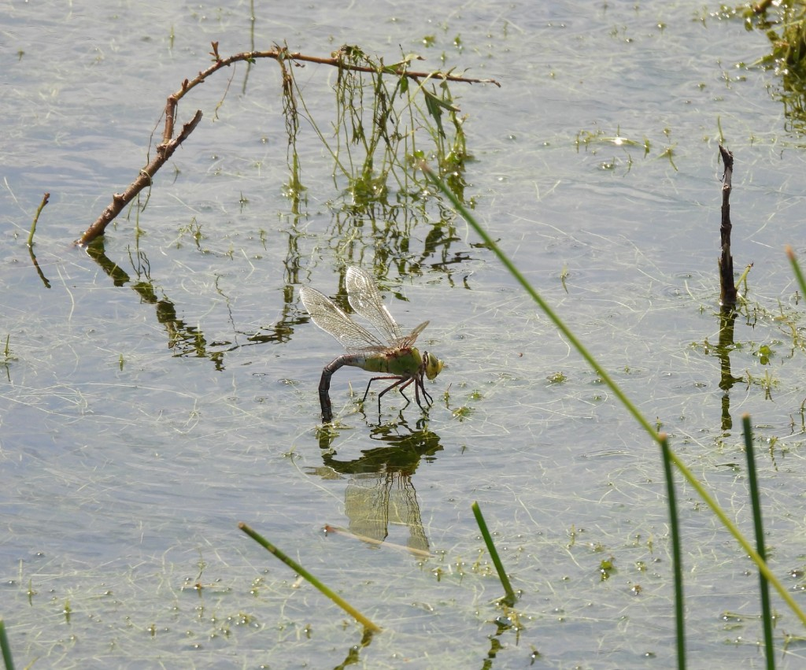
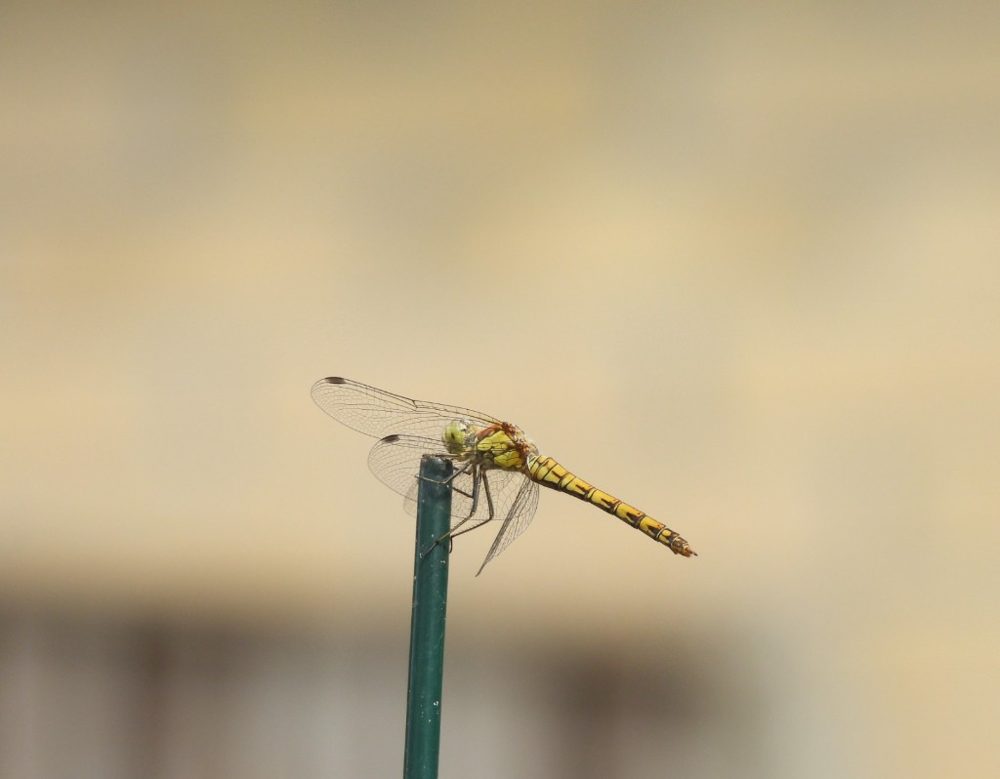
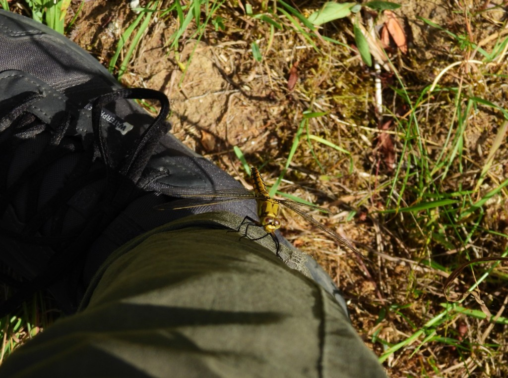

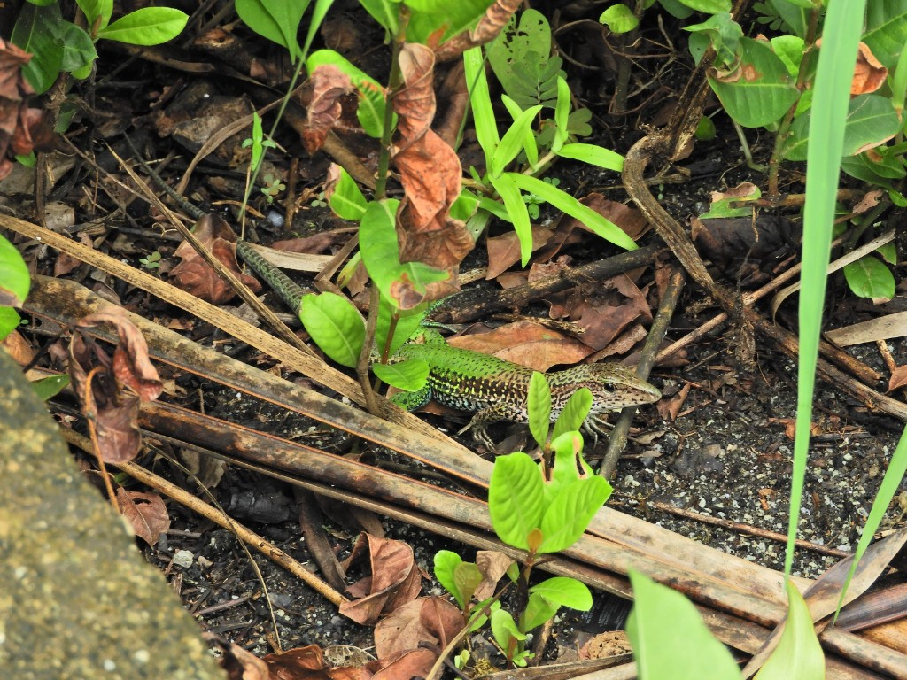
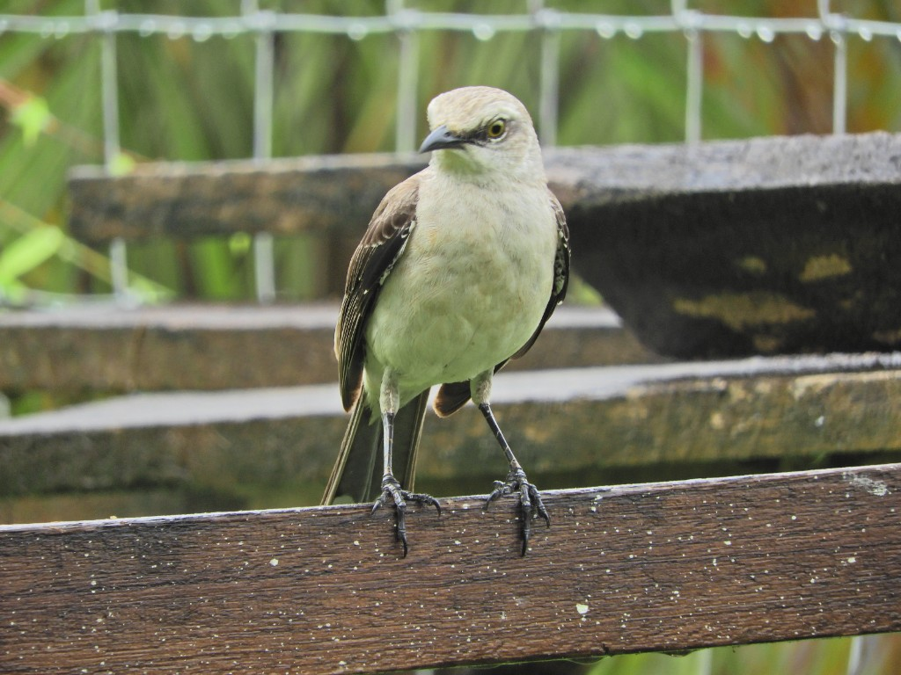
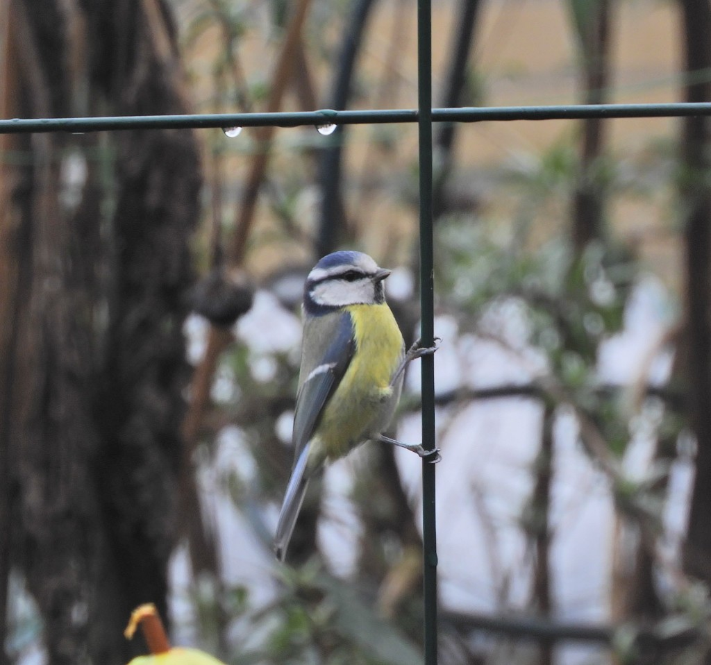
Kind words from readers and nature lovers.
"Such beautiful photos of Tilburg's wildlife. The dragonflies and butterflies feel so close — like being in the garden myself."
— Local reader
"Love the mix of flowers and birds. It's clear every picture is made with patience and care. A real inspiration for my own garden."
— Nature enthusiast
"Finally a blog that shows what grows and lives around here. The quality of the images is outstanding."
— Gardener, Tilburg
Based in Tilburg Noord. Say hello or ask about prints and collaborations.